PHOTO ADVICE FREE COURSE
カメラ開発経験者×プロカメラマンが送る
全15回の無料メール講座
※ 登録は30秒。いつでも解除できます。
Scroll
WHY CHOOSE US
カメラの原理を知り尽くした開発者だからこそ教えられる「本質」があります。表面的なテクニックではなく、根本から理解できる唯一の講座です。
7年間で10万人以上が受講。毎日のように届く感謝のメール。数字が裏付ける、本物の実績と信頼のプログラム。
ご登録いただいた方全員に、カメラ選びの秘訣をまとめた特別PDFレポート「デジタル一眼レフの選び方」をプレゼント。
INSTRUCTOR
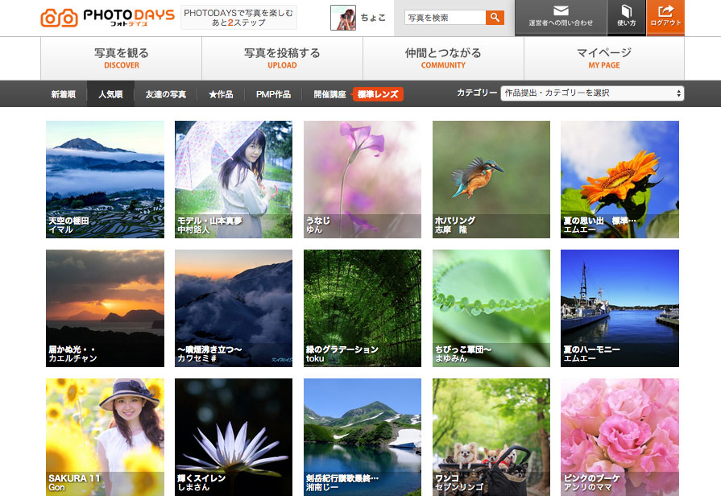
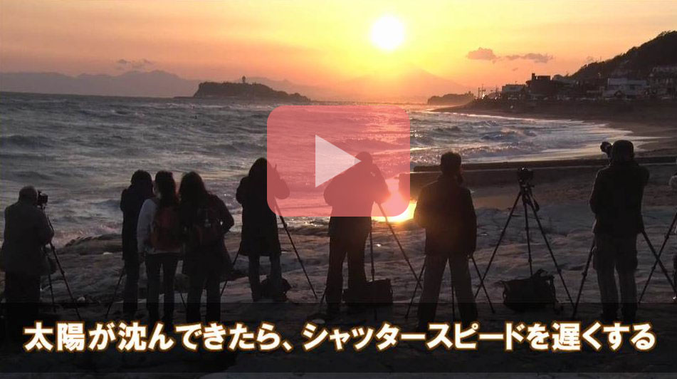
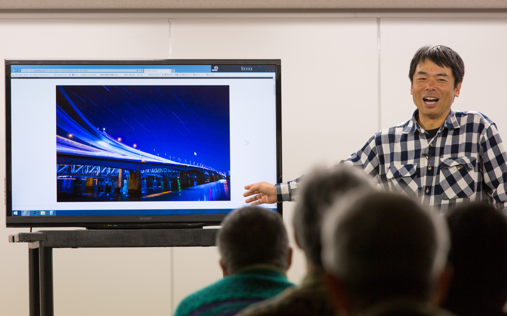
世の中に写真教室は数多くありますが、一眼レフの仕組みを知り尽くしたカメラ開発者が講師を務めるのはデジタル一眼レフ無料メール講座だけです。
カメラの原理に基づいた「一眼レフ選びと写真上達の本質」を教えます。
ABOUT THE INSTRUCTOR
カメラメーカーでカメラ開発の経験を積み、現在はフォトアドバイス株式会社 代表として一眼レフをはじめたい方への購入アドバイスや、一眼レフで上手な写真を撮る方法の指導をしています。
これまで「一眼レフを使ってもなかなか納得できる写真が撮れない」という方の話をたくさん伺ってきました。そのような方に共通することは——
今回このメール講座を無料で配布するのは、一眼レフユーザーの皆様がこれ以上遠回りをすることなく、効率的に写真の腕を上達させてほしいと思ったからです。
COURSE CONTENT
アメブロランキングで1位に支持されたカメラ開発者が、正しい順序と適切な量、学習ペースまで考慮して作り上げたプログラム。
TESTIMONIALS
すでに100,000人以上の方が受講し、毎日のように感謝のメールをいただいています。充実した内容と本当に価値のあるものを提供したいという想いが伝わっているからであると自負しています。
「デジタル一眼レフ上達講座」で勉強しました。大変易しく解説してくれているのでよく分かりました。その後、キャノンのシンデレラレンズ（50mm)を購入。
学習したお陰でこんな写真も撮れるようになりました。
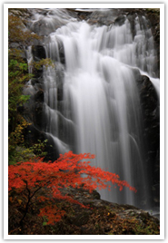
山形県写真展で思いがけず入賞してしまいました。
すっかり舞い上がっております。カメラをいじってしばらくになるのですが、ここ3年は入選が続いてきておりました。
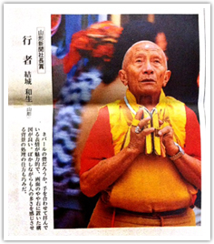
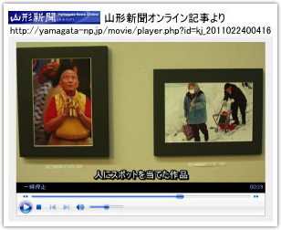
佐藤さんの言われる様に１／６より下のシャッタースピードで三脚使用できれいに撮れました。
後輩たちがどんどん一眼を購入し、今では12人ほどが所属するサークルメンバーになりました。
「当たった！」と感じる事が多くなりました。
佐藤孝太郎さんに教えていただいた、「何を写真で伝えたいのか」というのも意識しています。無料購読メールに申し込んで本当に良かったと思っています。
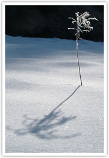
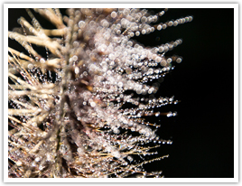
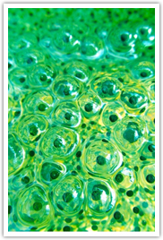
左「ナルシスト」 中「宝飾の木」タムロンフォトコンテスト優秀賞 右「細胞分裂」GANREF入賞
佐藤様に教えていただいた「花火」の撮り方、この設定で撮ってみました。
千葉は御宿の花火、千葉県民展で特別賞をいただきました。千葉県本部委員長賞「ハ・ナ・ビ」
フォトアドバイスに教わった「主催者の意図を考える」に従って、
片品村の「今残したい片品の景観」という目的にマッチした写真を撮ることができました。片品村商工会長賞「春爛漫」
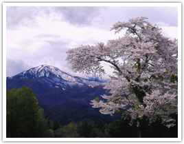
「毎回、ものすごく為になります。」
屋冝 様「撮る風景がかわったような気がします。」
太田 様「改めて『そうだったのか』とためになることが多々あり大変勉強になります。」
麻生 様「メッセージを込めた写真が少しずつできあがってきていると実感しています。」
藤森 様「まさに目からうろこです。」
岩間 様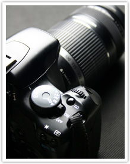
SPECIAL BONUS
ご登録いただいた方全員に、カメラ選びの秘訣をまとめた特別PDFレポート「デジタル一眼レフの選び方」を無料進呈します。
※ ご登録後5日後にPDFダウンロード形式でお届けします。
WHY FREE?
フォトアドバイスでは、写真撮影講座の開催、DVD教材の販売、メールサポートなどのサービスを行っています。提供している全てのコンテンツが、あなたのお役に立てる本物の内容だと自負しています。
しかし、あなたが「なんか信用できない」と思うのも無理はありません。だから——
デジタル一眼レフに関する情報が山ほど氾濫している世の中で、何を信じていいのかがわからない。私は、あなたに本物の情報をお届けするには、まず無料で本当に役に立つ情報を提供することが重要だと考え、このメール講座を開催しています。
無料メール講座だけでも十分に価値のある内容です。きっとあなたも今まで見えなかった、デジタル一眼レフで上手な写真を撮る本質が見えるはずです。
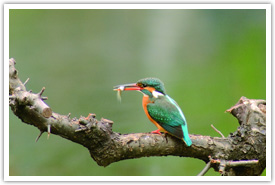
FREE REGISTRATION
カメラの原理に基づいた「一眼レフ選びと写真上達の本質」を学ぶ
・ご登録いただいた個人情報はプライバシーポリシーに基づき、個人情報保護についての法令を遵守し適正な利用、管理を社内において徹底しています。
・全15回にわたってメール学習教材が送付されます。
・無料レポート「デジタル一眼レフの選び方」は、ご登録後5日後にPDFダウンロード形式でお届けします。
・学習の進捗に応じて各種有料サービスをご案内させていただくことがあります。
・メールの末尾に記載されている登録解除フォームよりいつでも登録をご解除することができます。